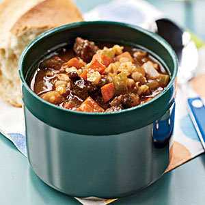
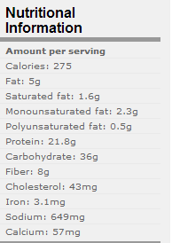
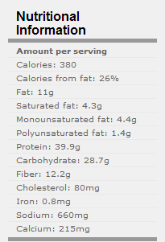
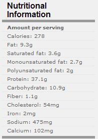
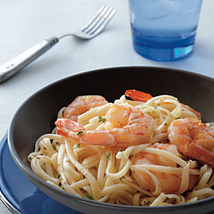
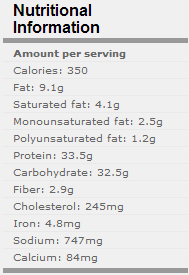
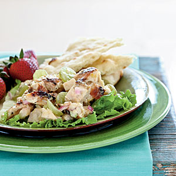
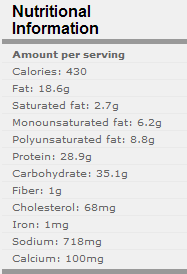

|
Beef and Barley Soup |
|
|  | |
|
Ingredients Cooking
spray 2 cups chopped onion (about 1 large)
1 pound
steak, trimmed and cut into 1/2-inch cubes
1 1/2 cups chopped
peeled carrot
1 cup chopped celery
(about 4 stalks)
5 garlic cloves,
minced
1 cup uncooked barley
5 cups fat-free,
less-sodium beef broth
2 cups water
1/2 cup no-salt-added
tomato puree
1/2 teaspoon
salt
1/4 teaspoon freshly
ground black pepper
2 bay leaves
Preparation
1.
Heat a large Dutch
oven over medium heat. Coat pan with cooking spray. Add chopped
onion and beef to pan; cook 10 minutes or until onion is tender and
beef is browned, stirring occasionally. Add chopped carrot and
chopped celery to pan; cook 5 minutes, stirring occasionally. Stir
in garlic; cook 30 seconds. Stir in barley and remaining
ingredients, and bring to a boil. Cover, reduce heat, and simmer 40
minutes or until the barley is done and vegetables are tender.
Discard bay leaves.
|
 |
| Yield: 6 servings (serving size: 1 3/4 cups) | |
|
Chicken-Tortilla Pie |
|
 |
|
|
Ingredients
2 cups shredded
cooked chicken breast
1/4 cup Fresh
Salsa
1 cup spicy black
bean dip
multi grain flour tortillas
1/2 cup
reduced-fat shredded cheese
Cooking spray
finely chopped fresh basil
Preparation 1. Preheat oven
to 450°. 2. Combine
chicken and salsa in a medium bowl. 3. Spread
1/4 cup black bean dip over each tortilla. Top each evenly with
chicken mixture and 2 tablespoons cheese. Stack tortillas in
bottom of a 9-inch spring form pan coated with cooking spray.
Bake at 450° for 10 minutes or until thoroughly heated and
cheese melts. Remove sides of pan. Cut pie into 4 wedges. Serve
immediately. |
 |
| Yield: 4 servings (serving size: 1 wedge) | |
|
Halibut with Coconut-Red Curry Sauce |
|
|
Ingredients 2 teaspoons
canola oil, divided 4 (6-ounce)
halibut fillets 1 cup chopped
onion 1/2 cup chopped
green onions 1 tablespoon
grated peeled fresh ginger 1 cup light
coconut milk 1 tablespoon
sugar 1 tablespoon
fish sauce 3/4 teaspoon
red curry paste 1/2 teaspoon
ground coriander 1 tablespoon
chopped fresh basil 2 teaspoons
fresh lime juice
Preparation 1. Heat 1
teaspoon oil in a large nonstick skillet over medium-high heat. Add
fish to pan; cook 5 minutes on each side or until fish flakes easily
when tested with a fork or until desired degree of doneness. Remove
fish from pan; keep warm. 2. Add
remaining 1 teaspoon oil to pan. Add onion, green onions, and
ginger; sauté 2 minutes. Stir in coconut milk and the next 4
ingredients (through coriander). Bring to a boil; cook 1 minute.
Remove from heat. Stir in basil and juice. Seasoned
rice with bok choy: Combine 1 1/2 cups water and 3/4 cup basmati
rice in a medium saucepan; bring to a boil. Cover, reduce heat,
and simmer 12 minutes. Stir in 2 cups chopped baby bok choy;
cover and cook 8 minutes or until liquid is absorbed. Combine 1
1/2 tablespoons low-sodium soy sauce, 1 tablespoon fresh lime
juice, 1/2 teaspoon sugar, and 1/2 teaspoon dark sesame oil;
stir into rice mixture. |
 |
|
Yield: 4
servings (serving size: 1 fillet and about 1/3 cup sauce) |
|
|
Linguine with Peppery Shrimp |
|
|  | |
|
ingredients
2 pounds large shrimp, peeled and deveined
4 teaspoons kosher salt, divided
1 1/2 teaspoons freshly ground black pepper
Cooking spray
1/2 teaspoon grated lemon rind
3 tablespoons fresh lemon juice
1 tablespoon chopped fresh thyme, divided
3 tablespoons butter
6 quarts water
8 ounces uncooked gluten-free quinoa linguine (such as Ancient
Harvest)
Preparation
1. Combine shrimp, 1/2 teaspoon salt, and pepper, tossing to coat
shrimp. Heat a large nonstick skillet over medium-high heat. Coat
pan with cooking spray. Add shrimp; sauté 4 minutes or until shrimp
are done. |
 |
| Yield: 6 servings (serving size: about 1 1/3 cups) | |
|
Grilled Chicken Salad |
|
|  | |
|
Ingredients Cooking
spray 2 cups chopped onion (about 1 large)
1 pound
steak, trimmed and cut into 1/2-inch cubes
1 1/2 cups chopped
peeled carrot
1 cup chopped celery
(about 4 stalks)
5 garlic cloves,
minced
1 cup uncooked barley
5 cups fat-free,
less-sodium beef broth
2 cups water
1/2 cup no-salt-added
tomato puree
1/2 teaspoon
salt
1/4 teaspoon freshly
ground black pepper
2 bay leaves Preparation
1.
Heat a large Dutch oven over medium
heat. Coat pan with cooking spray. Add chopped onion and beef to
pan; cook 10 minutes or until onion is tender and beef is browned,
stirring occasionally. Add chopped carrot and chopped celery to pan;
cook 5 minutes, stirring occasionally. Stir in garlic; cook 30
seconds. Stir in barley and remaining ingredients, and bring to a
boil. Cover, reduce heat, and simmer 40 minutes or until the barley
is done and vegetables are tender. Discard bay leaves. |
 |
| Yield: 5 servings (serving size: about 1 cup) | |